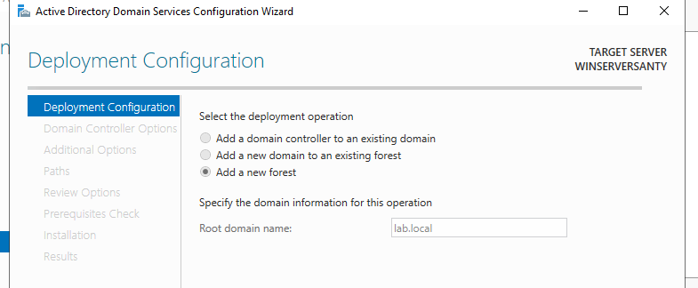
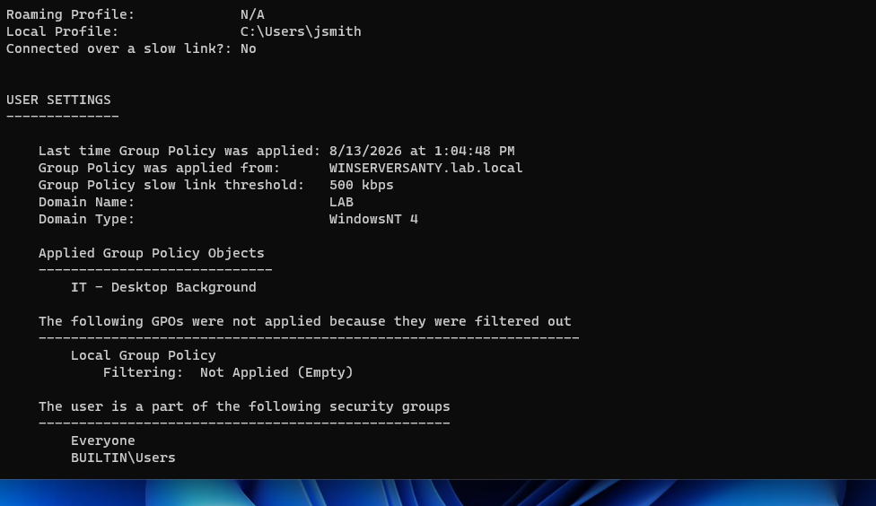
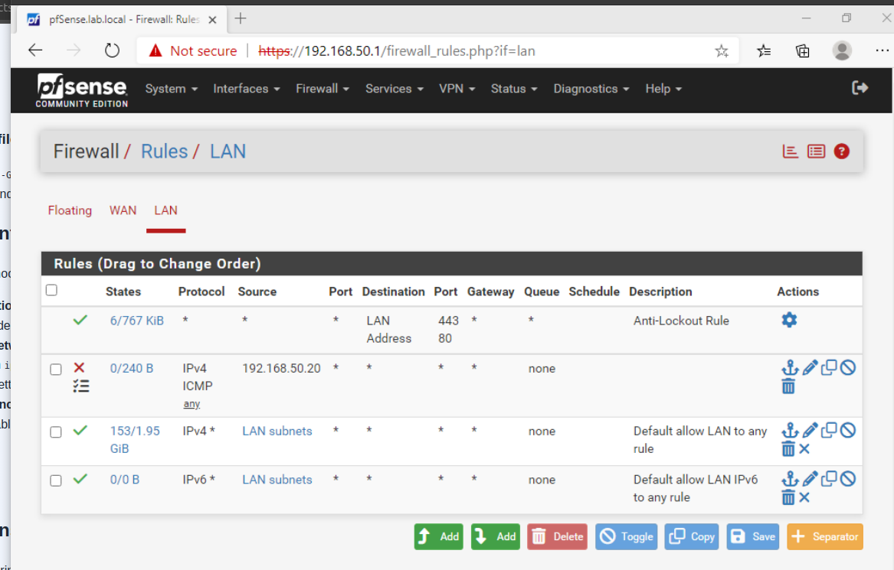
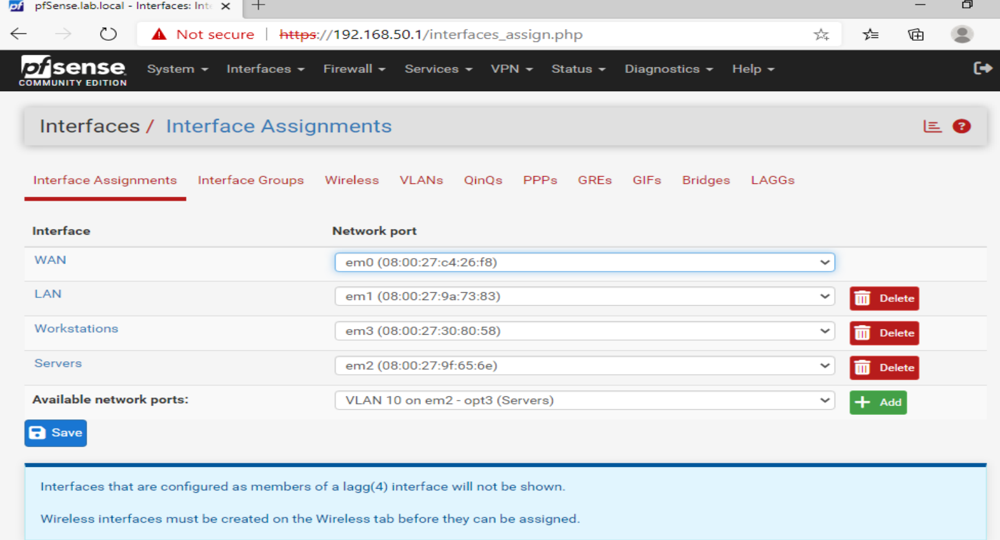
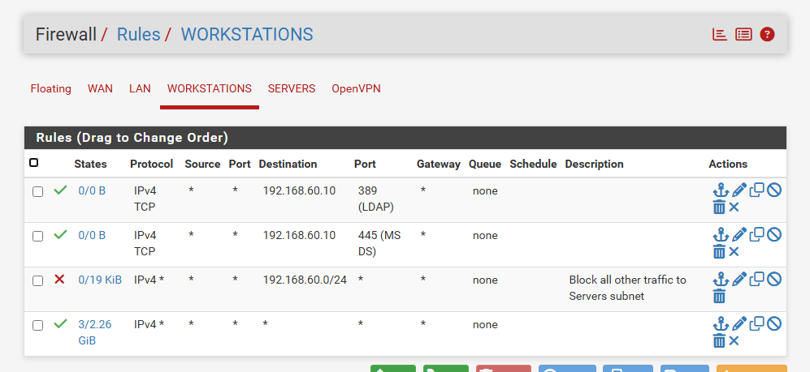
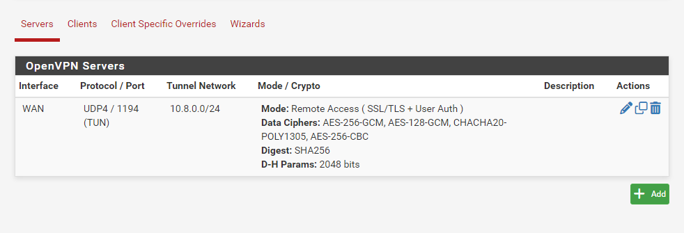
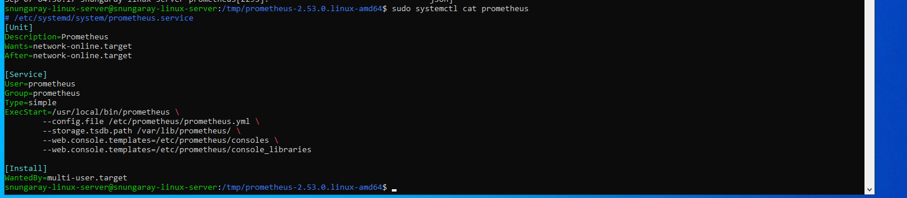
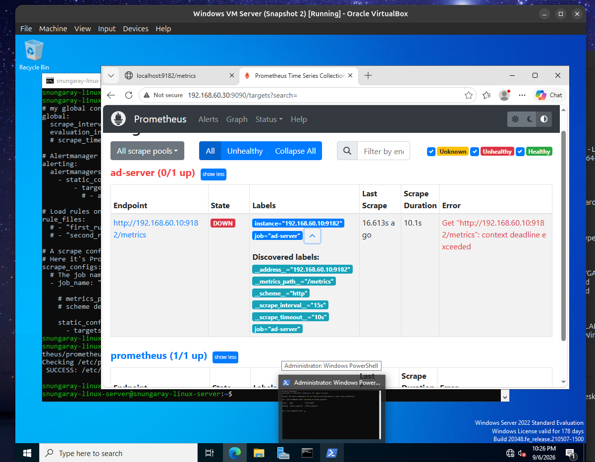
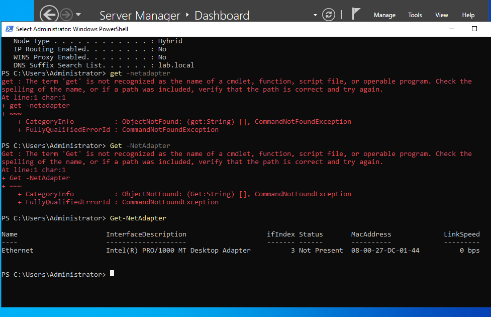

Overview
I built a small simulated company network from scratch in VirtualBox — an identity layer (Active Directory), a network layer (a segmented, firewalled network behind pfSense), and an observability layer (Prometheus and Grafana) — to get hands-on practice with the tools help desk, sysadmin, and network admin roles use daily. Each layer builds on the last: the network layer controls what can reach what, the identity layer controls what's allowed to be done once you're there, and the monitoring layer tells you whether any of it is actually healthy.
Environment: 1x Windows Server 2022 VM promoted to a Domain Controller for
lab.local, 2+ Windows 11 client VMs joined to the domain, a pfSense VM acting as
router/firewall between two segmented internal networks — Servers
(192.168.60.0/24) and Workstations (192.168.70.0/24) —
with remote VPN access, and an Ubuntu Server VM running Prometheus and Grafana to monitor it all.
Tags: Windows Server 2022 Active Directory Group Policy pfSense Network Segmentation OpenVPN DNS / DHCP Linux Prometheus Grafana VirtualBox
Phase 1 — Identity & Access
Domain Controller setup
Installed Windows Server 2022, configured a static IP, and promoted it to a Domain Controller
running AD DS and DNS for a new forest, lab.local.
Organizational Units and Group Policy
Created two OUs — IT and Sales — each with a test user account. I
built a Group Policy Object scoped only to the IT OU that pushes a custom desktop
wallpaper, and confirmed with gpresult /r and side-by-side login tests that the
policy applied to the IT user and correctly did not apply to the Sales user.


gpresult /r confirming the "IT - Desktop Background" GPO applied correctly, scoped only to the IT OUSecurity groups and file share permissions
Created IT-Group and Sales-Group security groups, separate from the
OUs — OUs organize and apply policy, groups grant access. Set up a shared folder with a nested
subfolder, and configured distinct Share and NTFS permissions so each group could access the
shared folder, but only IT-Group could access the IT-specific subfolder.
Phase 2 — Network Infrastructure
Router/firewall setup
Installed pfSense as a virtual router and firewall, with a WAN interface (NAT, simulating an ISP connection) and a LAN interface fronting my existing lab network. Created and tested a targeted firewall rule blocking ICMP from a specific host, verified it took effect with a failed ping and a matching entry in the firewall logs, then removed the test rule.

Network segmentation
Split the lab into two segments — Servers and Workstations — each
with its own pfSense interface, rather than one flat network. VirtualBox's Internal Network
adapters don't support real 802.1Q VLAN tagging, so instead of tagging traffic on a single
NIC, I gave pfSense a dedicated virtual NIC per segment — a practical adaptation that achieves
the same isolation goal.
By default, Workstations couldn't reach Servers at all — true network-level isolation, not just an AD permission boundary. I then added narrow, deliberate exceptions: Workstations can reach the AD server on SMB (445) and LDAP (389) only, with everything else to that subnet explicitly blocked. This is the same default-deny-with-exceptions pattern real enterprise networks use.


DNS forwarding and DHCP
Configured a DNS Domain Override on pfSense so any query for lab.local forwards
straight to the AD server (the actual authority for that domain), while pfSense resolves
everything else itself. Enabled DHCP on the Workstations segment and confirmed a fresh client
could pull a correct address, DNS, and domain name automatically with no manual network
configuration.
Remote access VPN
Set up an OpenVPN remote-access server on pfSense: created a Certificate Authority and server certificate, configured user authentication, and scoped the VPN's allowed routes to both internal subnets. Exported a client profile and confirmed a device could authenticate, tunnel in, and reach the internal network.

Phase 3 — Monitoring & Observability
Added a Prometheus + Grafana monitoring stack on a new Ubuntu Server VM — my first Linux server in the lab, managed entirely over SSH — to get visibility into whether the infrastructure I'd built was actually healthy, not just running.
Prometheus, installed and run as a proper Linux service
Rather than using a shortcut package, I installed Prometheus manually: downloaded the binary,
created a dedicated prometheus system user, and wrote the systemd unit file by
hand. This is the same binary + systemd unit + config pattern used by a huge number of Linux
services, so it's a transferable skill beyond Prometheus specifically.

Exporters and cross-network scraping
Installed windows_exporter on the AD server to expose CPU, memory, and system
metrics, then configured Prometheus to scrape it across the network. Confirmed data flowing
end to end in Prometheus's own web UI before layering visualization on top.

Grafana dashboards and alerting
Connected Grafana to Prometheus as a data source and built a dashboard tracking available
memory and CPU usage over time for the AD server. Added an alert rule on the built-in
up metric that fires when the server stops responding, and verified it correctly
transitions from Normal → Pending → Firing by stopping the exporter service and watching it
trigger.
Documenting the troubleshooting was, honestly, more valuable than the happy path:
- Windows Home edition can't join a domain. Windows 10/11 Home doesn't support domain join — only Pro, Enterprise, or Education do. Upgraded in place using Microsoft's public generic Pro key, avoiding a reinstall.
-
A dropped virtual network adapter. After a few days away, the server's
network adapter showed as Not Present, and anything touching the domain threw a
"Server Down" error. Diagnosed with
ipconfig /allandGet-NetAdapter, resolved by switching the VM's virtual NIC type in VirtualBox and reconfiguring the static IP. - Permission inheritance. After granting Sales-Group access to the parent shared folder, they could also access the IT-only subfolder — NTFS permissions inherit downward by default. Fixed by disabling inheritance on the subfolder and setting explicit permissions.
- New pfSense interfaces default-block private networks. Every new segment came with auto-generated rules blocking RFC1918 (private) addresses — which included the segment's own subnet, silently breaking normal internal traffic until I found and disabled the default rules.
- A protocol-scoped rule silently blocked the wrong thing. A Pass rule I'd narrowed to ICMP (for a ping test) also ended up blocking HTTPS to the pfSense GUI, since it only covered the one protocol I'd been testing. Widening it to "Any" resolved both.
- Stale IP reference after re-addressing. After moving the AD server to a new segment with a new IP, a file share stopped resolving — because I was still connecting to its old address. A quick reminder that documentation needs to keep pace with infrastructure changes.
-
A duplicated flag broke the Prometheus service. The systemd unit file
used
--web.console.templatestwice instead of--web.console.librariesfor the second flag. Prometheus responded by dumping its help text instead of starting — diagnosed by reading the raw output withjournalctl -u prometheusrather than relying onsystemctl statusalone. -
An exporter reachable locally but not remotely.
windows_exporterworked fine atlocalhost:9182on the AD server itself, but Prometheus couldn't scrape it across the network. The installer hadn't created a Windows Firewall rule for the port — a good reminder that "it works on this machine" and "it works from the network" are two different checks.

Get-NetAdapter showing the virtual network adapter as "Not Present" — the root cause of a string of downstream errorsWhat This Demonstrates
- Installing and configuring Windows Server, promoting to a Domain Controller
- Structuring an AD environment with OUs vs. security groups, and why they're separate
- Building and scoping Group Policy Objects, and verifying results
- Configuring Share + NTFS permissions and understanding inheritance
- Deploying a router/firewall and writing, ordering, and verifying firewall rules
- Designing network segmentation with a default-deny, exceptions-only approach
- Configuring DNS forwarding and DHCP across segmented networks
- Setting up certificate-based remote access VPN
- Installing and running a Linux service manually via systemd, including user and permission setup
- Configuring metrics exporters and cross-network scraping with Prometheus
- Building Grafana dashboards and threshold-based alerting
- Methodical troubleshooting across Windows, network, and Linux infrastructure layers